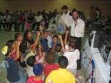

Adath Israel
has remained intact through the years, its doors have never closed,
carrying out the religious services of Shajarit, Minja and Arvit daily,
maintaining alive the traditions of our Fathers.
This synagogue
that was Asquenazí in a principle picks up equally among its
members to Sefaradí and Asquenazí, having guaranteed
a miniam almost daily. It has 120 families that are around 300 members
and they participate 80 families actively. This congregation has been
characterized to follow an orthodox line, counting strictly for miniam
to the Jewish men and dividing for a mejitza the men of the women. Besides
a strict observance of the KASHRUT in our kitchen.
Every day after
the prayers of Shajarit the synagogue offers a breakfast and in Minja
a snack, which is distributed gratuitously to our members that participate
in the prayers. It is had a bus to bring on Mondays and Thursdays
the people that live far from the synagogue, most of the Jews live
far from the synagogue. Our sidurim is of the Editorial Kehot South
American Lubavitch and in fact in each festivity we receive emissaries
of Chabad Freinds of Cuban Jewry, bringing us a lot of happiness and
spiritual elevation to our players.
The shabath is
the most important day in the week for each Jewish one and of course
in Adath Israel marks a difference, on Thursday we already bake the
jalots that will be exquisite, in Friday we make the Kidush in honor
to the shabath, we always try to distinguish this day with fish or
chicken, these last ones are bought alive and they are sacrificed
by our Shojet according to the halaja.
The Kabalat Shabath
counts with around 80 people, the song of Shalom Aleijem and the discussion
of the parashot of the week never lack, as well as the sacred candles
that distinguish the day of the rest, the rest of the shabath possesses
the same distinction, making Seuda shelishit and later Havdala. We
count in a day with more than 150 people.
Our synagogue
at the moment has 9 sefer Torah and a mikve that we make the Kasher the
different kitchen utensils that we have and in the conversions they
were used to make the ritual bathrooms. It is the only synagogue that
possesses a mikve in Cuba.
We have a publication
known as Jaim that has been carried out by people
belonging to the board of our synagogue.
